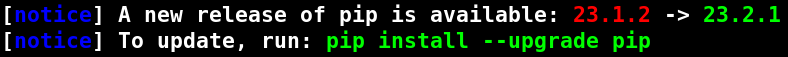

pip#
Tip
You can copy and paste code in the code blocks by hovering your mouse over the code block and pressing the icon () appearing in the top right corner.
Although we recommend using Conda for managing packages and environments due to its comprehensive features and dependency management, pip remains a valuable tool, especially when certain packages are not yet available or up-to-date in Conda.
pip is the de-facto standard tool for installing, upgrading, and maintaining
Python packages. It simplifies the management of package dependencies and supports installation
in global or virtual environments. pip also handles package versioning
to prevent compatibility issues. As a fundamental tool for any Python developer, pip is essentially
a tool for managing your Python packages.
It also has extensive documentation.
pip comes with most Python installations, including Conda.
This means you can use pip in both Conda and standard Python installations and environments.
For installing Python first, see here.
Below are some common tips and tricks about pip:
Tip
It is recommended that you create virtual environments for your projects. Environments allow you to manage installations without interfering with your main system. If you do not know what an environment is, please check the description in the Environments section.
Using pip in a clean environment (meaning no prior installed packages) typically avoids installation issues. However, the risk of dependency conflicts increases with prolonged use of the same environment. Testing updates in a separate environment before applying them broadly is a good idea.
Installing packages#
You can install packages with pip. List them during a single pip command
to install multiple packages at once.
Note
Use pip list to view currently installed packages.
python -m pip install "numpy==1.24.*" "scipy<1.10" "matplotlib"
python3 -m pip install "numpy==1.24.*" "scipy<1.10" "matplotlib"
The command will install:
Note
Use pip3 show numpy to get more detailed information about the numpy
package, such as the directory where it is installed, etc.
numpy at the latest version within the 1.24 release cycle
scipy at the latest version, but older than the 1.10
matplotlib at the latest version
When specifying more than one package on the line, dependencies will be checked during the installation to prevent conflicts.
Note
You will often encounter some warnings or notices from pip;
they look like the following.
It is perfectly normal, and
unnecessary to do what it says.
pip versions 21 and older:
{kind=link}
pip versions 22 and newer:
{kind=link}

Requirements file#
A requirements.txt file is often used to replicate an environment. Many Python tutorials will share a requirements.txt file containing
lines of packages. For instance, to replicate the example installation shown in Installing packages, one could create a file called requirements.txt:
numpy==1.24.*
scipy,1.10
matplotlib
The file contains the equivalent versions of the packages in the Installing packages section.
It is easier to do the installations with the help of a requirements.txt file when there are
too many packages to install simultaneously, as it helps us to not do the installations with a
single command on the same line or not to run the installation command multiple times.
To install using requirements.txt, use the -r flag:
python -m pip install -r requirements.txt
python3 -m pip install -r requirements.txt
Dependencies and conflicts#
Over time, installing packages can lead to dependency conflicts as new releases and new dependency requirements of each package may arise.
Below is a constructed example of a dependency conflict arising.
$> python -m pip install dtumathtools==1.0.1
... lots of output
$> python -m pip install --upgrade numpy
... lots of output ... then
dtumathtools 1.0.1 requires numpy<1.24,>=1.21.1, but you have numpy 1.25.2 which is incompatible.
$> python3 -m pip install dtumathtools==1.0.1
... lots of output
$> python3 -m pip install --upgrade numpy
... lots of output ... then
dtumathtools 1.0.1 requires numpy<1.24,>=1.21.1, but you have numpy 1.25.2 which is incompatible.
Tip
Always prefer to use environments to reduce package conflicts.
The first command completes installing the dtumathtools package
while ensuring compliance with all the required dependencies, including
other related packages that gets installed.
The second command successfully executes and upgrades numpy to version
1.25.2. However, upon completion, a warning is issued indicating a potential
issue. Although dtumathtools version 1.0.1 is installed and operational, it
requires explicitly numpy to be within the version range of 1.21.1<=numpy<1.24.
The newly installed numpy version 1.25.2 exceeds this required range, creating a
version conflict. This conflict can lead to a malfunctioning or broken installation,
as the requirements of some of the already installed packages (i.e., dtumathtools)
are not satisfied.
Warning
pip only obeys package requirements for packages installed on the same installation command:
# this will install numpy and scipy in compatible versions
... pip install numpy scipy
# this may install numpy and scipy in non-compatible versions
... pip install numpy
... pip install scipy
To check possible conflicts in the current environment, use pip check:
python -m pip check
python3 -m pip check
Tip
Further documentation on pip is available here.